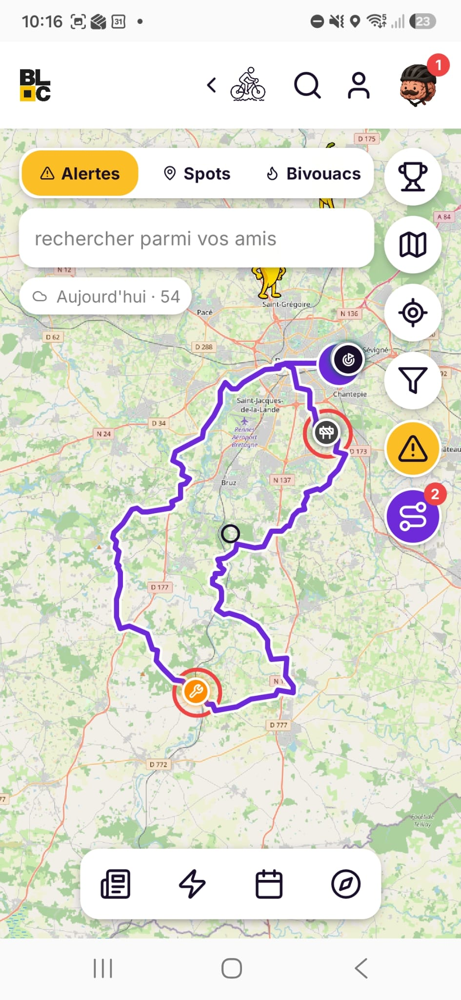
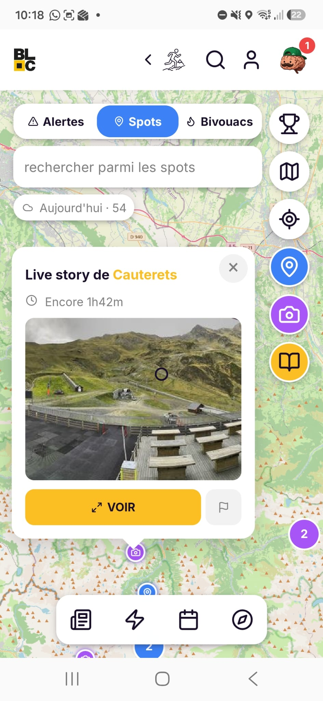
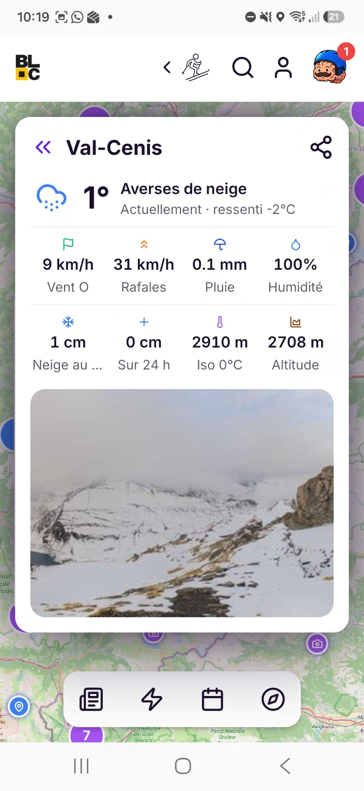
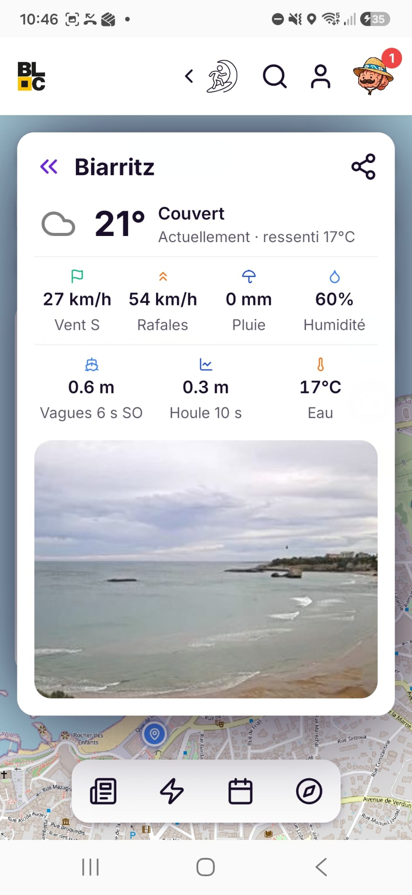

Tout ce qu'il faut savoir avant de sortir. Et pendant.
-
Signale un danger en deux gestes.
Vent fort, route fermée, crue, chasse en cours : un appui sur le bouton alerte et l'info apparaît sur la carte de tous les ExploRiders du secteur, en temps réel.
-
Charge ta trace, ou importe-la de Strava.
Importe un fichier GPX ou connecte ton compte Strava pour retrouver tes itinéraires et tes activités, avec les alertes de la communauté le long du parcours.

-
Le Waze de l'outdoor.
Une alerte reste visible 24 h sur la carte, la communauté modère les fausses alertes, et ta trace est vérifiée avant le départ.
-
Regarde le spot avant d'y aller.
Les live spot stories affichent la dernière image du spot, datée, directement sur la carte. Tu sais à quoi t'attendre avant même de charger la voiture.

-
Météo, vent, neige : les conditions du spot.
Pour chaque spot, la température ressentie, le vent et les rafales, la pluie, l'enneigement et l'isotherme. De quoi choisir le bon créneau.
- Ressenti
- Rafales
- Neige au sol
- Iso 0 °C
- Altitude

-
Côté océan, la houle et l'eau.
Hauteur et période des vagues, houle, température de l'eau et image du spot : les surfeurs ont leur bulletin, comme les montagnards.
- Vagues
- Période
- Houle
- Eau

-
Le spot en live.
Webcams en direct, vagues et neige, et le livre d'or où les ExploRiders laissent leurs infos du jour.